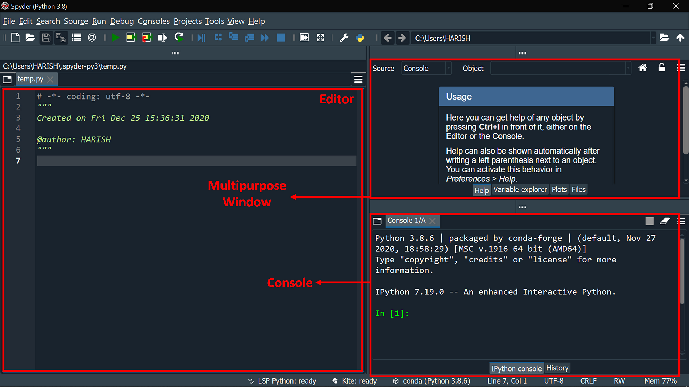

Spyder - Un IDE Orienté Science des Données
Utils
IDEs
Avant de se lancer
Présentation de Spyder
Spyder est un Environnement de Développement Intégré (IDE) créé spécifiquement pour répondre aux besoins des scientifiques, des ingénieurs et des analystes de données qui utilisent Python. Il se distingue par son orientation vers la science des données, offrant des outils et fonctionnalités adaptés à ce domaine.

1. Fonctionnalités Clés de Spyder
- Interface Utilisateur Intuitive :
- Spyder propose une interface épurée, divisée en plusieurs panneaux pour l’édition de code, la console Python, la gestion des variables, et la consultation de la documentation.
- Cette organisation facilite la navigation et la gestion simultanée de multiples aspects d’un projet.
- Intégration de l’IPython :
- La console IPython intégrée à Spyder permet un développement interactif, idéal pour tester des fragments de code, visualiser des données, et effectuer des analyses exploratoires.
- Elle supporte également le tracé en ligne et des fonctionnalités de débogage avancées.
- Outils de Débogage et d’Exploration des Données :
- Spyder inclut un débogueur puissant et des outils d’exploration de données, tels qu’un explorateur de variables et un visualisateur de matrices.
- Ces outils sont particulièrement utiles pour comprendre et analyser des ensembles de données complexes.
2. Support pour la Data Science
- Spyder est optimisé pour la data science, offrant une intégration native avec des bibliothèques telles que NumPy, Pandas, Matplotlib et SciPy.
- Il fournit des fonctionnalités spécifiques pour la visualisation de données et l’analyse interactive, facilitant la manipulation et l’interprétation des données.
3. Gestion des Environnements Virtuels
- Spyder permet de gérer facilement les environnements virtuels Python, ce qui est crucial pour maintenir les dépendances spécifiques à chaque projet isolées et gérables.

4. Personnalisation et Extensions
- Bien que Spyder offre moins d’options d’extensions que des IDE comme VS Code, il permet une personnalisation significative de l’interface utilisateur et de l’expérience de développement.
- Sa configuration par défaut est déjà bien adaptée aux besoins de la science des données, réduisant le besoin de personnalisation extensive.
5. Communauté et Ressources
- Spyder bénéficie d’une communauté active de développeurs et d’utilisateurs qui fournissent un soutien solide et une variété de ressources d’apprentissage, ce qui le rend accessible aux nouveaux utilisateurs.
Conclusion
Spyder est un choix idéal pour les professionnels et les étudiants dans les domaines de la science des données, de l’ingénierie ou de la recherche scientifique. Son orientation vers l’analyse et l’exploration de données, combinée à une interface intuitive, le rend particulièrement adapté pour les tâches d’analyse de données complexes et le développement scientifique.